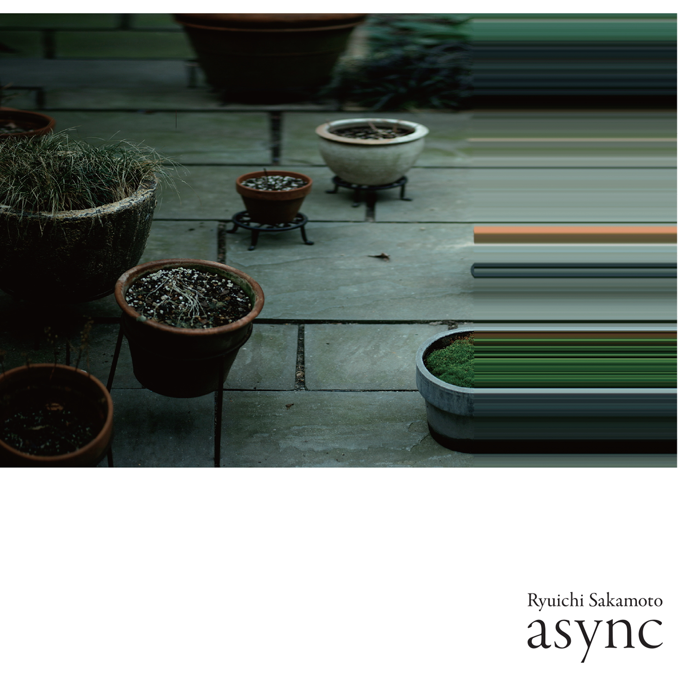
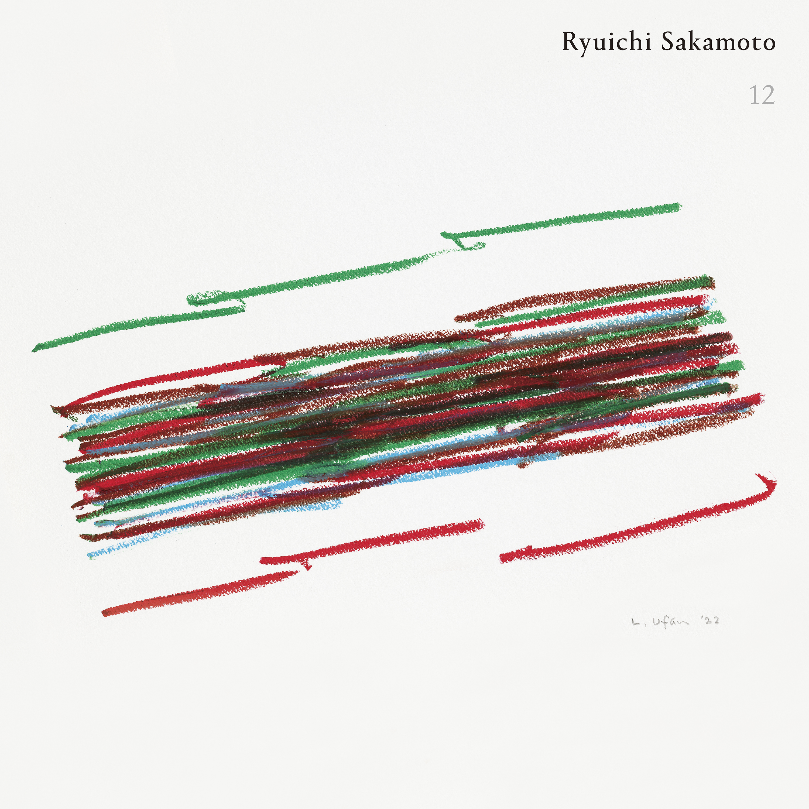
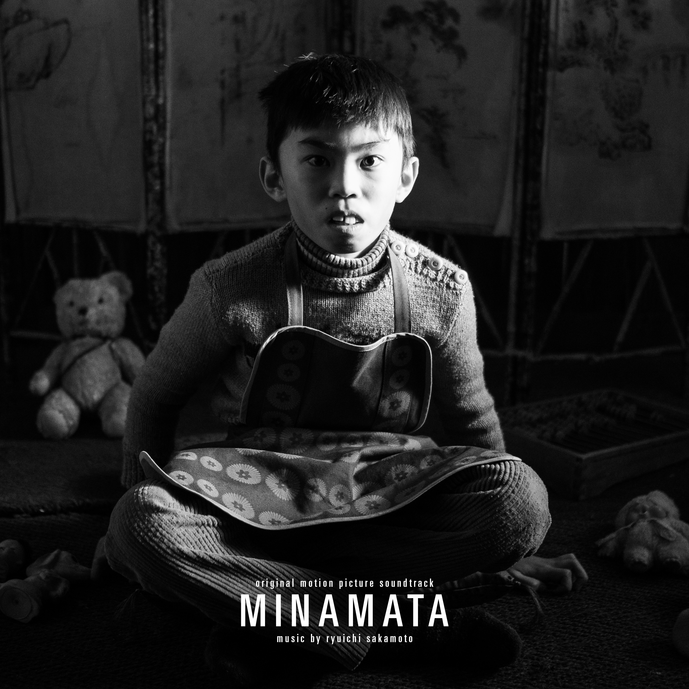
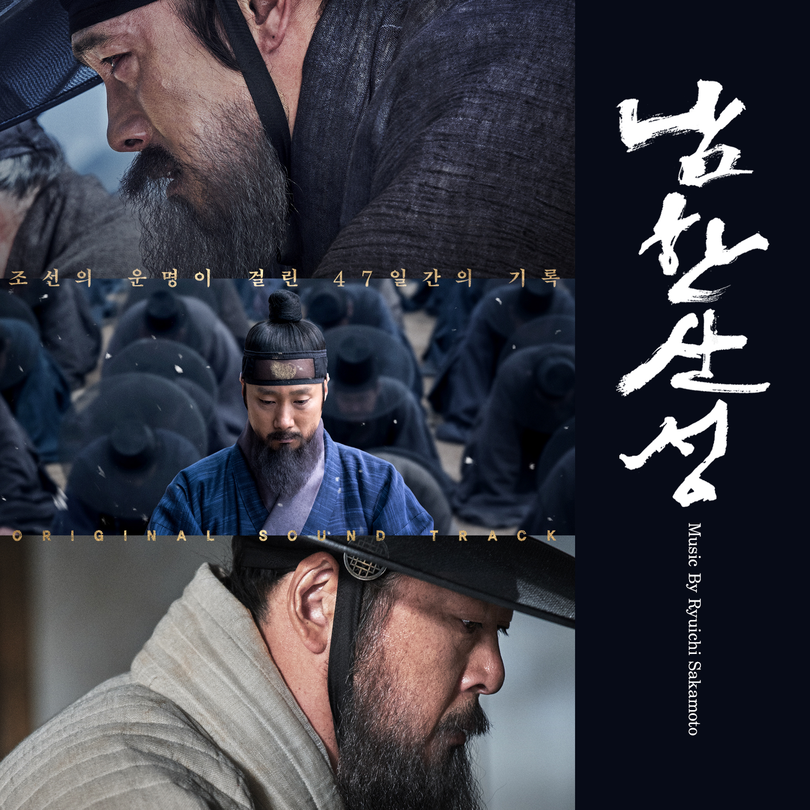
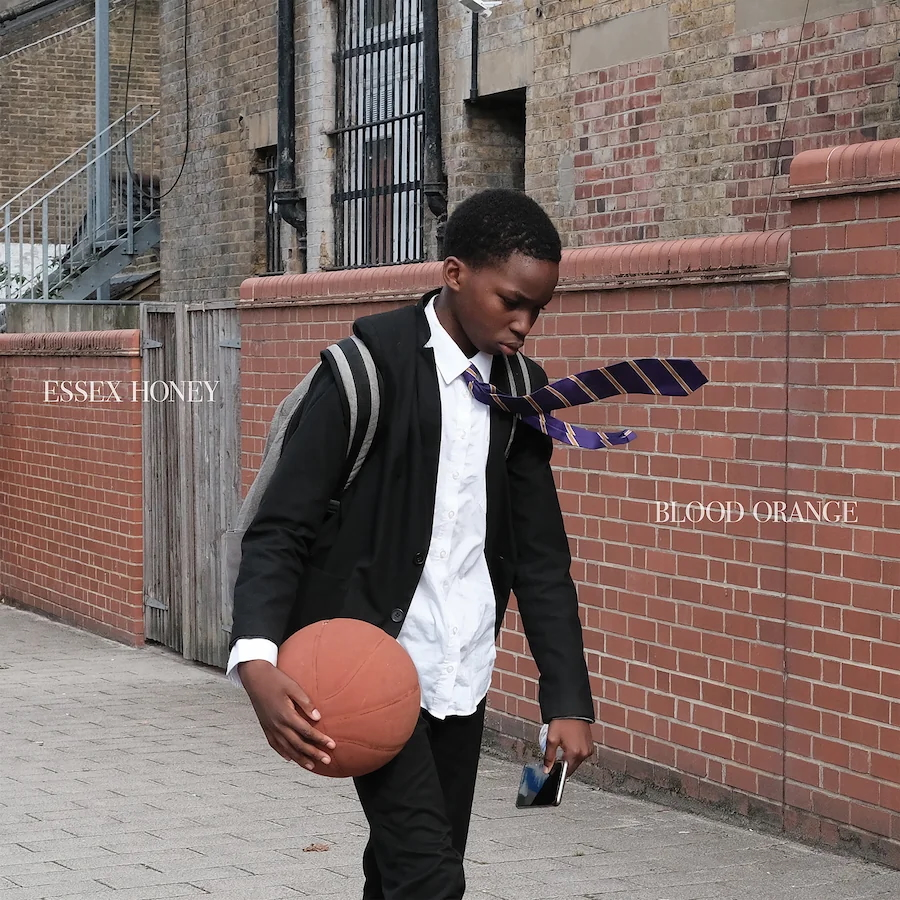
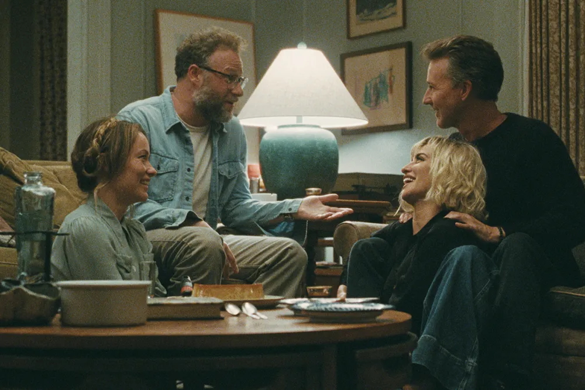

Ryuichi Sakamoto
Production Manager, Assistant Engineer, Recording Engineer (2010 to present)
Spanning albums, film scores, installations, and live performances, including the albums async and 12, film scores The Revenant and Minamata, live performances at the Park Avenue Armory and Ryuichi Sakamoto: Improvisation for Sonic Cure, and the site-specific performance with Alva Noto at the Glass House.





Devonté Hynes / Blood Orange
Engineer, Composer's Assistant
Recording engineer for several songs on the album Essex Honey (2025). Composer's assistant on the BBC drama The Listeners, and the upcoming film The Invite.



Susie Ibarra
Engineer
Working with the Pulitzer Prize-winning composer and percussionist on her upcoming CHAN water opus project, part of a trilogy of works exploring landscapes, water rhythms, and kundiman love songs.
Yuri Shimojo
Sound Design, Collaborative Installation
Co-created Memento Mori (2021) with Yuri Shimojo and Maria Takeuchi at Praise Shadows Art Gallery, Boston. The installation featured 108 petri dishes with sakura petals, light projection, and a 108-minute soundscape exploring themes of life and death.
Dumb Type
Field Recordings
Contributed field recordings for 2022 at La Biennale di Venezia, Playback 2022 at Der Kunst (Germany), and 2022: remap at Artizon Museum (Tokyo, 2023).